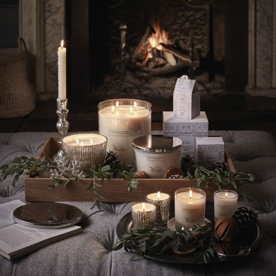
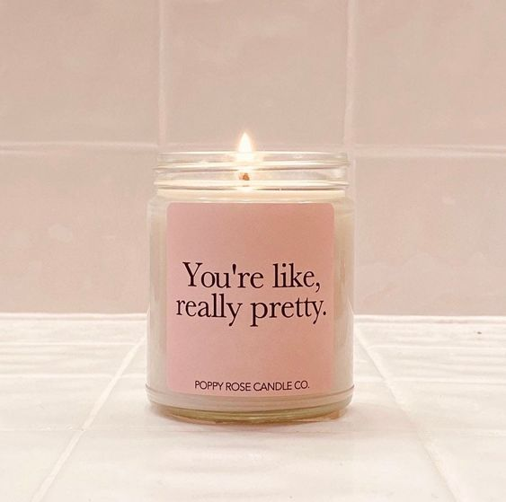
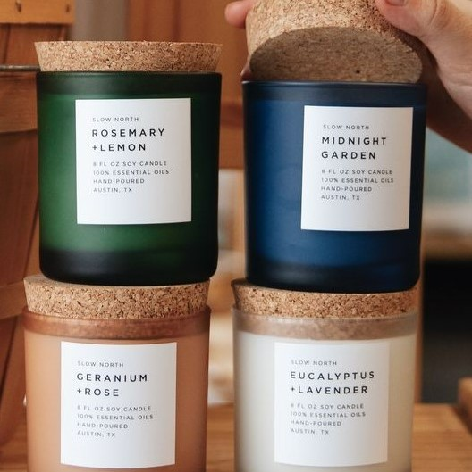

Violet, lily, phong lan, heliotrope, cây dành dành, mật ong và mận là một trong những nốt hương đầu tiên. Hổ phách, vani, gỗ và xạ hương mang đến sự ngọt ngào và sâu lắng cho lớp hương cuối.
Sản xuất nến đã được phát triển một cách độc lập tại nhiều nơi trên thế giới trong suốt lịch sử.Từ lịch sản xuất nến thông thường và phát triển đã có nến thơm ngày hôm nay
Các sản phẩm được yêu thích nhất tại Minuit Bonne Nuit Candle
Nến chưa bao giờ là cũ. Ánh nến là đại diện cho nhiều thứ.Bình yên, dịu êm, thư thái và một ít lãng mạn.
Nhưng đôi khi sự sắp xếp của chúng vẫn có tác dụng, nên người ta thường dùng nến để thể hiện sự thanh lịch vì chúng ta đều dễ dàng bị thu hút bởi ngọn lửa.
MINUIT BONNE MUIT chúng tôi cung cấp các loại nến mang đến nguồn năng lượng khác nhau vào không gian của bạn gồm “Positive Vibes, Protection, Abundance và Pure Love.
Chúng ta cần duy trì trạng thái năng lượng tích, nến thơm làm từ những hương liệu mang năng lượng tích cực sẽ giúp các bạn giải quyết được bầu không khí trong không gian của bạn.
Nến thơm thiên nhiên dùng để tạo cho bạn một không gian thơm mát, dễ chịu và trong lành hơn trong mọi không gian bạn đặt chúng.
Tinh dầu có trong nến thơm có chức năng giảm stress, giảm mệt mỏi, thanh lọc không khí.
Ánh lửa từ nến thơm sẽ lan tỏa khắp không gian, xua tan đi những không khí lạnh lẽo, mang đến cho không gian của bạn một nguồn năng lượng dồi dào.Nến Thơm Tạo Cảm Giác Thư Giãn, Thoải Mái. Hương Thơm Dễ Chịu